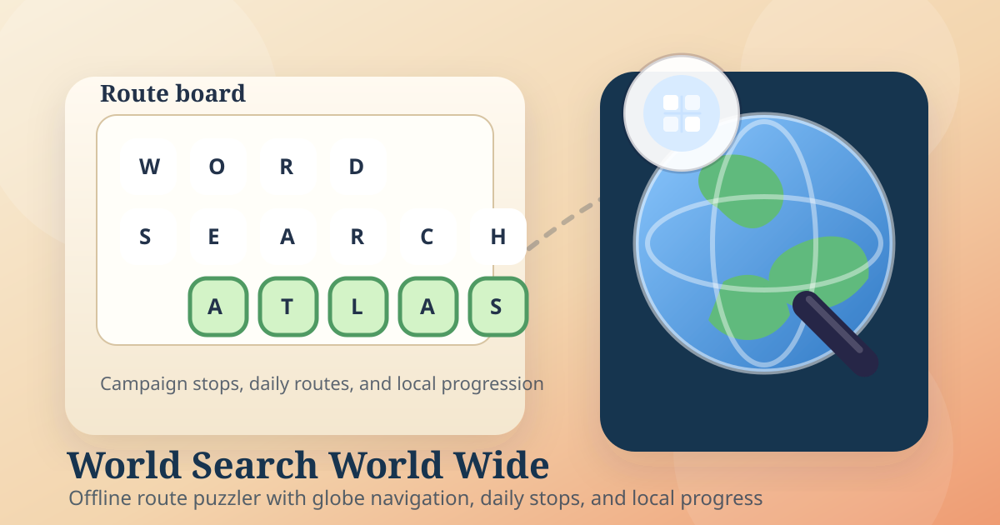

Campaign globe
The main interface centers progression on an adventure map with locations, routes, and destination-flavored word pools.
Word game / route atlas
Word Search Atlas turns each puzzle into a destination. The repo already shows a globe campaign map, daily routes, themed word pools, local progression, and a browser build that can be packaged for iPhone and iPad.

What it is
The repo shows a word-search game that leans into place, route, and progression. Instead of presenting a flat list of boards, it frames sessions around globe navigation, themed destinations, daily stops, and a persistent profile with coins, unlocks, and tracked stats.
That makes the strongest public framing a field manual: calm, tactile, and route-oriented. It matches the product better than a generic launch page because the value here is not hype or scale. It is structure, atmosphere, and a cleaner long-term loop for a familiar puzzle format.
Route deck
The main interface centers progression on an adventure map with locations, routes, and destination-flavored word pools.
Daily puzzles and streak tracking are named directly in the public metadata and appear in the shipped controls.
The build also works as a straight word-search app with random boards, themes, resize controls, and reset tools.
XP, coins, cosmetics, medals, and achievements extend the loop without requiring an account by default.
Drag-to-select interaction and iPhone/iPad-ready layout work are explicit in the repo and store-facing copy.
Use cases
Open the current route, clear a few words, and leave. The same profile and unlock state are still there on the next break.
The current privacy and store copy both describe an offline-friendly build with on-device persistence, which fits flights, commuting, and weak-connection use.
Campaign stops, daily streaks, coins, and cosmetics give the game a longer arc than a one-board word search site.
When progression is not the goal, the same build still supports free play, theme selection, and board resizing as a simpler word-search tool.
Visual section
No gameplay captures were checked into the repository. This export uses the shipped icon, the bundled earth texture, and a repo-derived illustration instead of fabricating device mockups.
Proof / trust / availability
The repo includes a browser entry point, manifest, service worker, and a Capacitor iOS project.
The privacy page states that progress, settings, and unlocks are stored on-device unless a later SDK changes that.
The repo already ships support and privacy pages plus a GitHub issue route for reproducible bug reports.
Those are the safest explicit platforms supported by the current files and store-facing copy.
FAQ
Final CTA
This export is built to drop into a central GitHub Pages product directory later. Until then, the current web build is the cleanest public entry point supported by the repo.